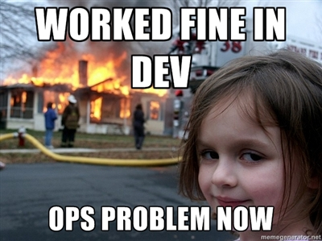
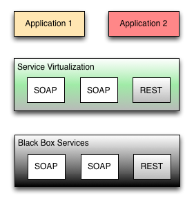

Grails Mocking
On Steroids
Christian Oestreich
OSS org: Grails Plugin Consortium
Company: Bluestem Group
Back In The Day
Everything was manual

In The Now
Everything is automated

Running a lot of the same functional tests on transactional systems cause corrupted test data
given:
assert customer.payments.size() == 0
when:
customer.makePayment()
then:
customer.payments.size() == 1
Well Of Course!
Spock, Mockito, etc.
//Spock
ServiceClass serviceClass = Mock(ServiceClass)
//Mockito
List mockedList = mock(List.class);
//EasyMock
List testDouble = EasyMock.createMock(List.class);
//PowerMock
MyClass myClassMock = PowerMock.createMock(MyClass.class);
Well... unless you want to mock your external systems during integration and functional tests
"The systems behind your system don't always need to be exercised to prove your system is operating and ready for continuous deployment" -me
#microservices #boundedcontext
In our SOA we needed a way to accomplish the following
- Have Reliable Success Conditions
- Have Reliable Fail Conditions
- Avoid Backend System Outages
- Support Continuous Deployment via Functional Tests
- Int & Funct Tests Pass or Fail Fast
Tools we looked at
Parasoft, Betamax, SoapUI, Third-party Solutions
These didn't meet our needs, not pci compliant,
were costly or all of the above.
Service Virtualization
A Smart Proxy
Service Virtualization

Service Virtualization

How about we also do these things
- Mock Responses (matched input)
- Enable Default Mock Responses (unmatched input)
- Map Request Fields To Mocked Response Fields (echo)
- Enable Mockable State Transition (#winning)
- Enable Transparent Proxy
- Record Live Data
- Replay Recorded Data
- Cache Responses
- Cache Pre-Fetching
- Monitor Service Calls (Hystrix)
Why Grails?
- CXF Plugin
- CXF Client Plugin
- Redis Plugin
- Jesque Plugin (async jobs)
- Hystrix Plugin
- Restful Controllers
- CRUD Dashboard Easy